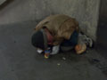

Reggel Berta megkapta a tegnapi proffiterol maradékát
És ez már a Kossuth tér. Négy darab traktor volt minden, amit látni lehetett.
Magyar nemzeti robogó, magyar nemzeti nejlonzacskóval
A traktorok türelmesen várakoztak
Parasztakarat
A traktorok mellett egy fiatalember jelvényeket árult. Mögötte két tüntetõ gazda - nem vicc - éppen a disznók etetésérõl értekezett, hevesen egyetértve abban, hogy kukorica kell annak, nem holmi tápszer.
A nénit annyira érdekelték a jelvények, hogy majd' fellökött. Közben angolul és németül is akart tanulni, nyilván, hogy jobban értse az EU-s pályázatokat.

Ugyanez közelebbrõl. Nini, kulcstartó is van!
Turulmadár, Árpád-sávos pajzs és kereszt minden mennyiségben. Én egy ilyen pici, aranyozott turult vettem. 400 forint volt.

Nem, nem soha! Kinek milyen tetszik.
Egyszerû paraszti humor
Hurrá, ilyet is lehet kapni. Nem tudtam, mi hiányzik.
Ha valakinek netán karddal átszúrt rohamsisak volt a jele az oviban...
Amerika, kabbe!
Ezt a darabot nem egészen értettem. De hát én nem hajózom.
Nem tudom, emlékeztek-e, rá, de a MIÉP bizony még ma is létezik. Éljen.
Van ám miépes kulcstartó is!
És éljenek az alcsúti cigánygyerekek!
Erdély különbözõ heraldikai megjelenései
Rohamsisak, pallos, és már mehetsz is a Hargitára
Ezt már hazafelé fotóztam. Itt javítják a kutyámat?
Ötletes reklámszlogen egy betonház falán

Na, ez meg mi? Az Árpád hídi aluljáróban találtuk.
Jöttek a rendõrök, megnézték õk is
Athina kicsit aggódott, hátha nem él
De élt! Hurrá!
A városi kommunikáció legújabb fóruma. Képzeljük el azt az alakot, aki a feliratokat elhelyezte. Próbáljuk elképzelni arckifejezését, testalkatát, mozgáskultúráját.